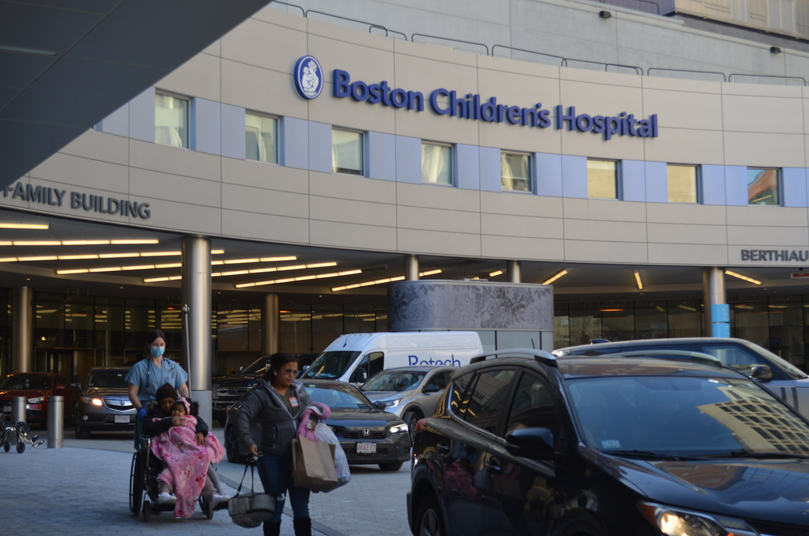
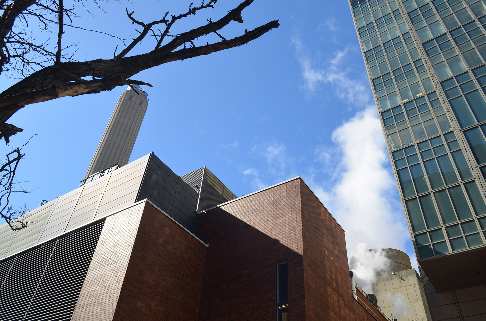
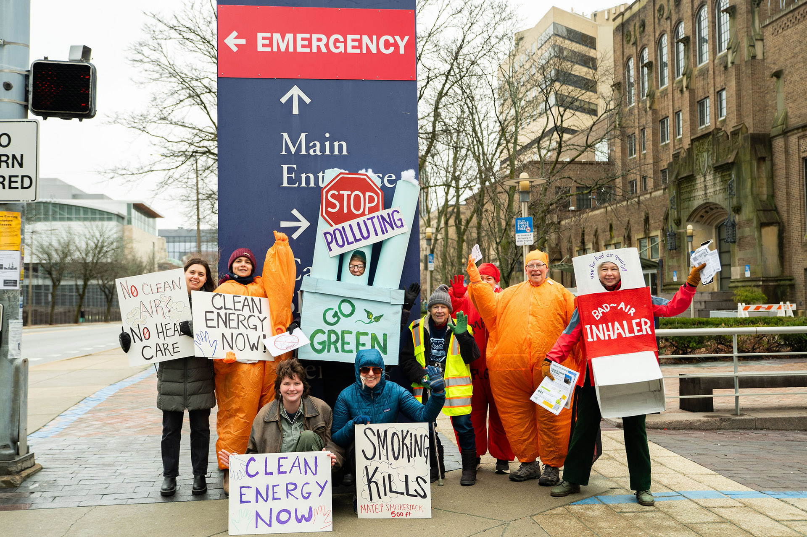
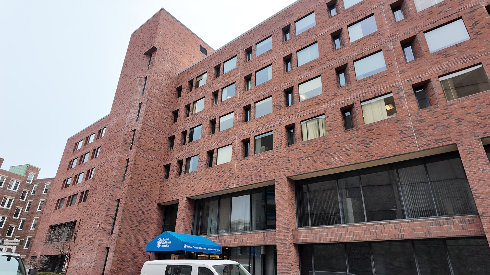

ENVIRONMENT
On a weekday morning in Boston’s Longwood Medical Area, patients hurry between hospital buildings for appointments. Parents push strollers toward Boston Children’s Hospital. Doctors and nurses move quickly through the entrances as ambulances arrive outside the emergency department.
Within sight of the hospital, another structure rises above the neighborhood, smoke billowing from its massive chimney. The Medical Area Total Energy Plant (MATEP) supplies electricity, steam, and chilled water to Children’s and many of the hospitals and research institutions in Longwood where doctors care for thousands of patients each day, treating them for everything from cancer and heart disease to allergies and respiratory illness.
The plant rarely appears in conversations about public health, but it’s a key reason why many hospitals in Boston — powered in part by the fossil-fuel-driven MATEP — are also among the city’s largest sources of greenhouse-gas emissions, contributing significantly to the pollution that can cause the respiratory illnesses for which patients are seeking treatment.

If Boston is going to reduce climate pollution, the work will start with buildings — the city’s largest source of emissions.
About 70 percent of Boston’s greenhouse-gas emissions come from buildings, according to city data. “If the city wants to make real progress on climate goals, the building sector is where the biggest changes have to happen,” said Hessann Farooqi, executive director of the Boston Climate Action Network, a community-based organization that works with Boston residents to advocate for climate justice and stronger clean energy policies.
That’s the goal behind Boston’s Building Emissions Reduction and Disclosure Ordinance (BERDO). The policy requires large buildings to report their energy use and gradually cut emissions to reach net zero by 2050 — a task that may TK about the hospitals.
Building owners are “just starting to understand how their buildings perform,” said Aidan Callan, Boston’s BERDO program manager, adding that reporting data is the first step toward actually reducing emissions. Using that data, the city can compare how different types of buildings perform. Already, there’s one clear takeaway: Hospitals stand out as some of the lowest-performing buildings in the city.
BERDO uses an Energy Star rating to track emissions. It’s similar to the rating on most home appliances, but takes into account factors such as a building’s size, type, occupancy, and energy use compared to similar buildings. Four out of five buildings in Boston fall into just two categories: multifamily housing and office buildings. These tend to perform relatively well in the city’s energy data, with an average Energy Star score of 71.
Where do Boston Buildings Score?
To better understand what drives these low scores, we reached out to hospitals across the city. Most declined to comment or did not respond, but Brian Smith, senior manager of energy, building systems, and sustainability at Boston Children’s Hospital explained MATEP’s role in its energy use and emissions.
Because the plant operates as a private utility and is not subject to the same regulations as the traditional grid, “the emissions can be higher associated with the plant and the utilities,” Smith said, calling it one of the hospital’s “most unique challenges.”
But the structure of the energy system is only part of the story. Hospitals themselves have far more demanding energy needs.
“Hospitals are energy-intensive buildings because they're running 24/7.
They have a lot of specialized equipment. So any hospital is going to be a high-power user,” said Farooqi.
At Boston Children’s Hospital, Smith points to ventilation as one of the biggest drivers. In clinical spaces, he said, systems may require “20 to 40 air changes an hour at 50 or 60 degrees, when it’s 100 degrees outside,” which means hospital systems are constantly pulling in outside air, cooling it, filtering it, and replacing the air inside, sometimes every few minutes, to prevent the spread of infection.
Those requirements help protect patients, but they also push hospital energy use far beyond most other building types.
And that’s where MATEP comes in.
The plant operates on a co-generation model, producing electricity and heat from the same fuel source. Two natural gas turbines and six diesel engines generate power on site. Instead of venting hot exhaust as waste, the facility captures that heat to produce steam for nearby hospitals and research buildings, allowing the system to extract more energy from each unit of fuel than a conventional power plant.

MATEP was built decades ago with one priority in mind: keeping the lights on. Each year, the plant releases roughly 290,000 tons of carbon dioxide, nearly 600 tons of nitrogen oxides, and significant amounts of particulate pollution. Today, the environmental cost of that model is becoming harder to ignore, and other hospital systems show it doesn’t have to be this way.
The Impact Beyond Hospital Walls
The facility sits next to Mission Hill, Roxbury, and Jamaica Plain — neighborhoods where residents have raised concerns about air quality and respiratory illness since the plant was first proposed in the 1970s.
WE WILL ADD A DATA VIS HERE
Farooqi said, “This is an oil and gas power plant, and it is right in the middle of the Fenway, right bordering Mission Hill, in what is a residential neighborhood, not too far away… The challenge, of course, is that
this is creating pollution that people are breathing in every single day, as they live, as they work, as they're commuting,including people who might be immunocompromised, who are coming to a hospital. And those folks, in most cases, have no idea that this is happening.”
Hospitals in the Longwood area are tied to the facility through long-term utility agreements that run through 2051. Those contracts were signed when the current operator, ENGIE North America, took over the plant in 2018. ENGIE’s goals for complying and exceeding ordinance standards within the timeframe is still unclear as of today, and they could not be reached for comment.
Pressure to reduce emissions from the facility has grown in recent years. A coalition of advocacy groups, including Slingshot, the Massachusetts Clean Peak Coalition, Climate Code Blue, SEAM, and YouthCAN has called for the plant’s older turbines to be replaced with renewable energy and battery storage, arguing that cleaner alternatives are technically feasible even in a dense urban setting. Advocates say the issue is becoming more visible to nearby communities. (PREDICTED QUOTE — Mireille: “We’re seeing growing awareness in the community. People are starting to connect the plant to the air they breathe every day.”)
In a February 2025 essay, Regina LaRocque, an associate professor of medicine at Harvard Medical School, criticized the university's continued reliance on the plant, pointing to what she described as a gap between Harvard's public climate commitments and the fossil-fuel infrastructure operating in the Longwood area. “While the mission of these hospitals is to promote health and well-being,
MATEP’s polluting emissions directly worsen the health of patients and nearby residents.”
Recent organizing efforts have also taken the form of public demonstrations. (PREDICTED QUOTE — Mireille Bejjani): “The goal of the protest was to make it clear that this isn’t just an infrastructure issue. It's a public health issue, and communities are demanding change.”
ADD QUOTES SLINGSHOT DIRECTOR MIREILLE BEJJANI AND PHOTOS, FIG CAP FROM THE PROTEST

For Farooqi, the problem is difficult to solve without addressing the energy system itself: “For any of these hospitals to meet the city’s net-zero targets, they will have to address emissions tied to the Longwood energy system.” He added “decarbonizing hospitals is new and hard, especially in a dense urban area like Longwood.”
But, hospitals in the Longwood area are tied to the facility through long-term utility agreements that run through 2051. Those contracts were signed when the current operator, ENGIE North America, took over the plant in 2018. That arrangement effectively ties the Longwood medical campus to fossil-fuel-dependent energy for decades to come, even as many of its institutions publicly commit to ambitious climate goals. “The opportunities to really upgrade or improve efficiency are very limited,” said Smith, from Children’s hospital. “It’s hard to do that and to get the capital and the time to shut things down.”
New hospital construction is beginning to show what lower-emission healthcare buildings could look like.
At Boston Children’s Hospital, leaders say newer facilities are already demonstrating how modern design can significantly reduce energy use. A key example is the Hale Building, a 650,000-square-foot clinical tower that opened in 2016.


“The energy use intensity of that building is less than half of the previous clinical building that we probably built maybe 20 years ago,” Smith said.
Hospital officials say newer buildings tend to perform better because they are designed using more modern efficiency standards. Many of today’s facilities include better insulation, thicker and more energy-efficient windows, and updated building systems that use less energy to heat, cool, and power the building.
“It’s just easier to run a space efficiently when it is well insulated, when you have thicker windows,” said Kate Lewandowski, director of sustainability at Boston Children’s Hospital.
A similar approach can be seen at Boston University, where the Duan Family Center for Computing & Data Sciences was designed to be fully electric and net-zero, powered entirely by renewable energy. “CDS is the largest fully fossil-fuel-free and net-zero building in the city of Boston,” said Sam Moller, assistant director of communications for BU Sustainability. Such projects are easier when building from scratch, a luxury older hospitals do not have as they work through trying to lessen their energy needs
WE WILL REWRITE OUR CONCLUSION HERE